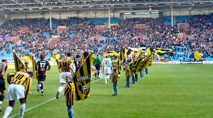
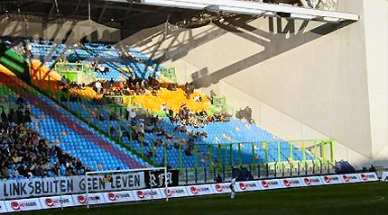
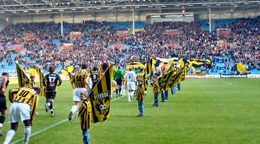
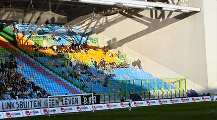
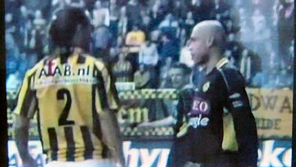
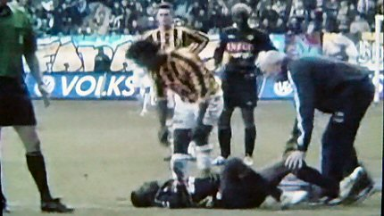
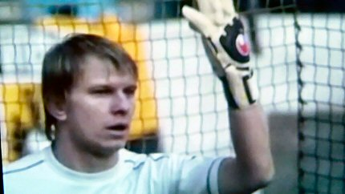
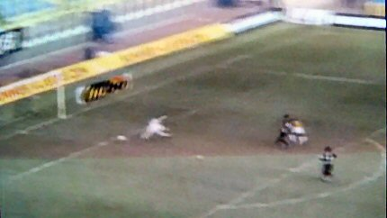
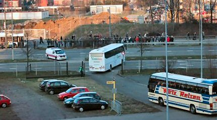

|
Vitesse - Roda JC (3-0) 6 februari 2005 |

Opkomst van de spelers. Roda in het zwarte uit-tenue.

De 150 meegereisde Roda-supporters zagen niet veel van de wedstrijd
vanwege de zon en het irritante net.
Vitesse
- Roda JC (3-0) 6 februari 2005


Opkomst van de spelers. Roda in het zwarte uit-tenue.
De 150 meegereisde Roda-supporters zagen niet veel van de wedstrijd
vanwege de zon en het irritante net.

Vreven had ruzie met Cristiano en kneep de Braziliaan de nek dicht. Roda
speelde vandaag zonder Senden en de geschorste Sergio.

Het ongelooflijk zwak spelende Roda bood Vitesse een waar
kansenfestival.
Hersi (24'), M. Jansen (36') en Amoah (84') maakten daar gebruik van. Hier
ligt Sonko onderuit. De speler die van Roda naar Den-Bosch mocht gaan,
maar dit niet wilde, speelde de hele wedstrijd (!) De laatste 20 min. mocht
nieuwe aanwinst Youssef Sofiane meespelen.

M.o.t.m. Kujovic behoedde Roda voor een nog dramatischer afgang.

De goal van Amoah.

Het carnaval begint al meteen met een kater....
Roda verliest door
deze nederlaag niet alleen de aansluiting bij de subtop
maar ook nog eens een riante uitgangspositie voor Europees voetbal.